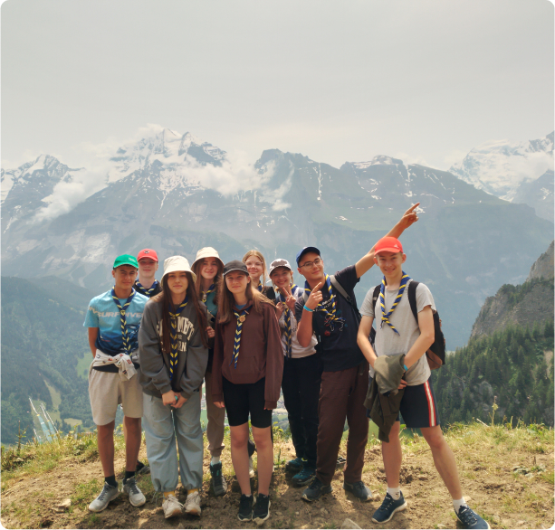
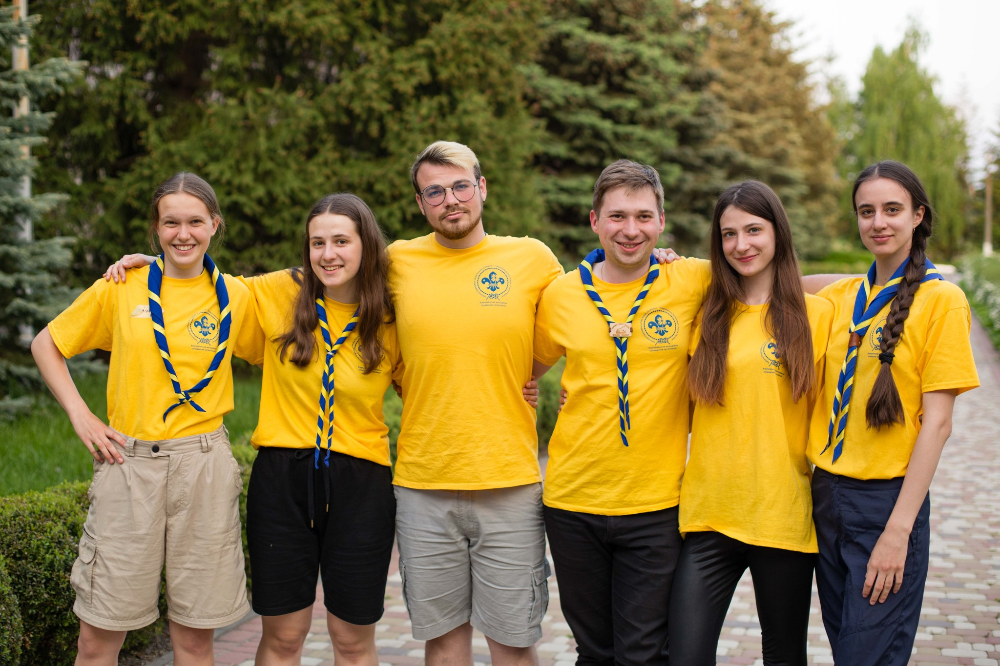
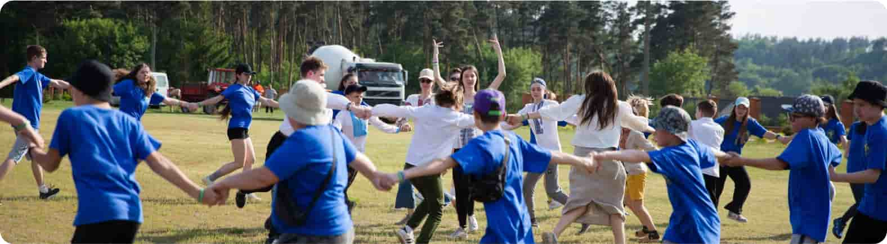
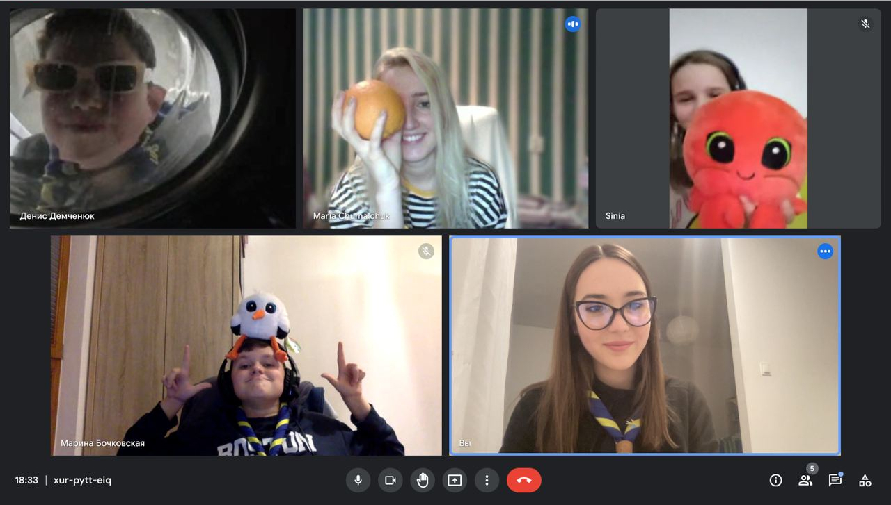
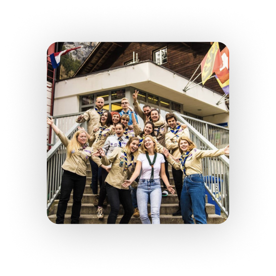
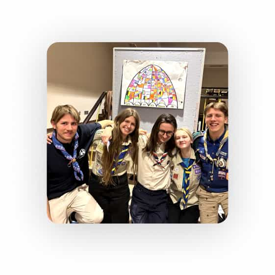
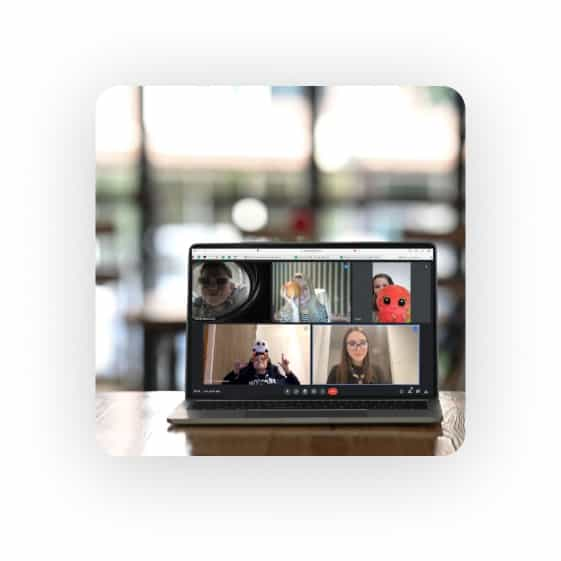

Відкрий світ українського Скаутингу!
Приєднатись до нас
Про нас
Скаути України - це молодіжна громадська організація, що сприяє розвитку молодих людей через Скаутинг. Ми прагнемо виховувати лідерів та відповідальних громадян, надаючи можливості для пригод, навчання та самовдосконалення.
-

Наша Історія
Національну Організацію Скаутів України (НОСУ) засновано у 2007 році. У 2008 році на 38-й Всесвітній Скаутській Конференції у Кореї НОСУ стала повноправним членом Всесвітньої Організації Скаутського Руху (далі – ВОСР). Наразі ми нараховуємо вже 2000+ учасників, маємо 173 країни-партнери та провели 1328 освітніх заходів.
-
Місія
Наша Місія – це сприяння вихованню молоді України за системою цінностей, заснованій на Скаутській Обіцянці та Скаутському Законі. Через Скаутинг ми будуємо кращий світ, де люди самореалізуються як особистості та відіграють конструктивну роль у суспільстві.
-

Програма
Скаутська Молодіжна Програма є основою Скаутингу. Це відповідно організований, практичний навчальний процес для дітей та підлітків, спрямований на гармонійний та всебічний розвиток особистости задля досягнення свого найвищого потенціалу
-
Скаутський Метод
Скаутський Метод є унікальною системою прогресивного самовиховання. Він застосовує різні елементи, які підтримують мету та Принципи
Скаути україни
1320+
Освітніх заходів
173
Країни - партнери
35+
Об‘єднань в Україні
Наші заходи
-
Табори
Збори-походи надають дітям можливість розвивати свої інтереси та хобі, а також застосовувати на практиці знання та навички, отримані в Скаутингу протягом року.
-
Міжнародні заходи
Участь у міжнародних поїздках та подорожах створює умови для пізнання Скаутами навколишнього світу, включаючи все різноманіття культур, мов та країн. Міжнародні заходи пропонують багато різноманітних активностей для дітей, молодих людей та дорослих лідерів НОСУ.
-
Тренінги
Орієнтовані на Скаутів та Скаутських лідерів на різних етапах їхньої Скаутської подорожі та розроблені таким чином, щоб задовольнити потреби й інтереси членів різного віку
-
Онлайн івенти
Світ не стоїть на місці, і умови, в яких ми живемо, постійно змінюються, НОСУ є гнучкою у використанні різноманітних форм в роботі зі Скаутами. Це дає можливість не тільки брати участь у інтерактивних воркшопах та тренінгах, але й у міжнародних заходах, залишаючись в Україні.
Відгуки про Скаутинг
Для мене Скаутинг - це місце, де цікаво все: я знаходжу нових друзів, граю в активні ігри, дізнаюсь нове, подорожую та беру участь у таборах. А ще, я почала старанніше вчити англійську, бо вона потрібна на міжнародних івентах. Бути Скаутом захоплює!
Поліна Прик
Скаут СО Тотем
Це дійсно унікальна можливість для саморозвитку та формування характеру. Я пишаюся дивовижними молодими людьми, які виросли з дітей моїх знайомих, що в НОСУ з дитинства. Мій син - у Скаутах, а дочка нещодавно стала Кабскаутом, і я не памʼятаю її щасливішою.
Андрій Смиковський
Батько дітей-Скаутів
В моєму патрулі - всі мої найкращі друзі! Я з нетерпінням чекаю кожної зустрічі, аби проводити час разом та дізнаватися нове
Єсенія Пономаренко
Кабскаут СО "Асгард"
На вихідних я завжди з посмішкою вирушаю до своєї Cкаутської групи, бо знаю, що на мене чекають. Популярний стереотип: "Скаутинг - це лише для дітей", однак мій досвід відкрив мені безцінні уроки, яких не змогли надати ані школа, ані університет, ані робота. Окрім цього, я відчуваю, що роблю внесок у формування майбутнього України — це надзвичайно важливо, особливо зараз. Сподіваюся, що все більше людей усвідомлюватимуть значущість цієї справи і приєднаються до нас.
Анастасія Ратушняк
Скаут-Лідер СО "Скаути Києва"
Запрошуємо стати Скаутом або Скаут-Лідером!
Членом Національної Організації Скаутів України може стати кожний, незалежно від віку, походження, раси, гендеру чи віросповідання!
Приєднатись до нас